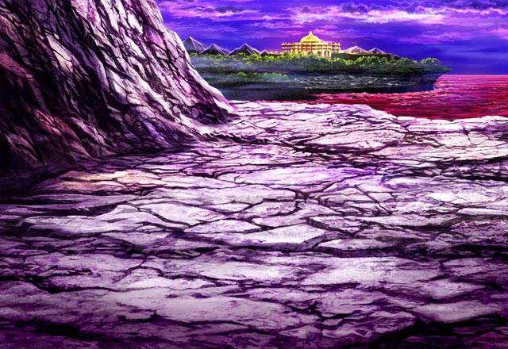
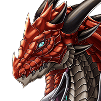
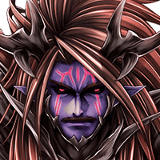
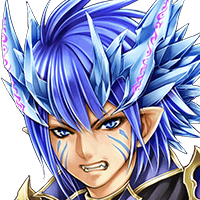
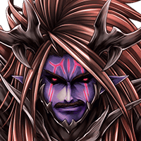
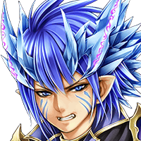
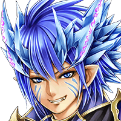
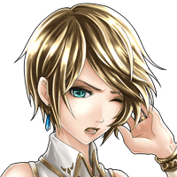

パリス
これが霊峰ナーガ……。 雰囲気のある山ね。
カル
ああ、ここはこの地を支配してきた 代々の竜の力が眠っている場所らしい。
？？？
そうだ。だから貴様たちをこれ以上、 進ませるわけにはいかない。


リオメルグ
カル様、やはりその者たちと 行動をともにしましたね。
カル
みんなが納得できる 何か他の方法が無いのかを！
巨大な声
くだらんな。 それこそ別の世界に住む者の言葉だ。
ルジーナ
ケッ、息子と違って 随分と迫力があるじゃねーか……。

バリュオン
……フン。
バリュオン
こんな愚か者たちより 危険な相手がいるだろう。

カル
俺の話を聞いてくれ！
バリュオン
魔神の力もまともに使えん者の 言葉など聞く耳は持たぬ。
バリュオン
俺に何かを伝えたければ お前の強さを示すのだな。
バリュオン
この地では それがすべてと教えただろう。

バリュオン
この地では俺が最強だ。 それ故に俺は俺のやりたいことをやるだけ。
バリュオン
カルナ・マスタは神々の世界に戻す。 この儀式を成功させてな。

カル
ま、待ってくれ！
リオメルグ
カル様、先ほども言いましたが 今回は私も容赦はしません。
リオメルグ
儀式の場にあなたを入れることは 決してありません。
ルジーナ
ハン、優等生の甘ちゃんと思ってたら 家庭の問題がどっさり。
ルジーナ
吐き出してみろよ。 お前の汚い本音ってヤツをさー！

カル
ハハッ、悪いがルジーナ。 もうその段階は終わったよ。
カル
今はただ目の前のことに 正面からぶつかるだけだ。
カル
Shou-chan、バリュオンの言葉、 お前も聞いただろう？
カル
つまり、アイツを俺たちで 倒せばいいってことだ。
カル
ああ、構わない。 というか、アイツを倒すのを手伝ってくれ。

パリス
それはわかるわ……。
パリス
あの迫力、モーラが別次元の力があると 言うだけのことはあるわね。
ルジーナ
Shou-chan、 相手はお前の親友の父親だ。
カル
ハハッ、Shou-chan、 俺も期待してるぜ。
カル
ルシアスを倒したお前の力、 あの頑固者に見せてやってくれ！